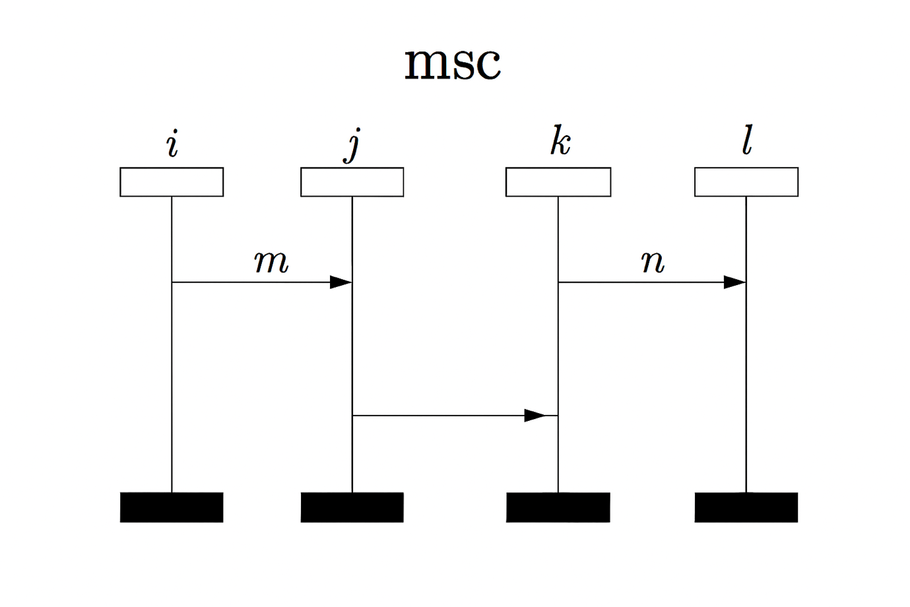
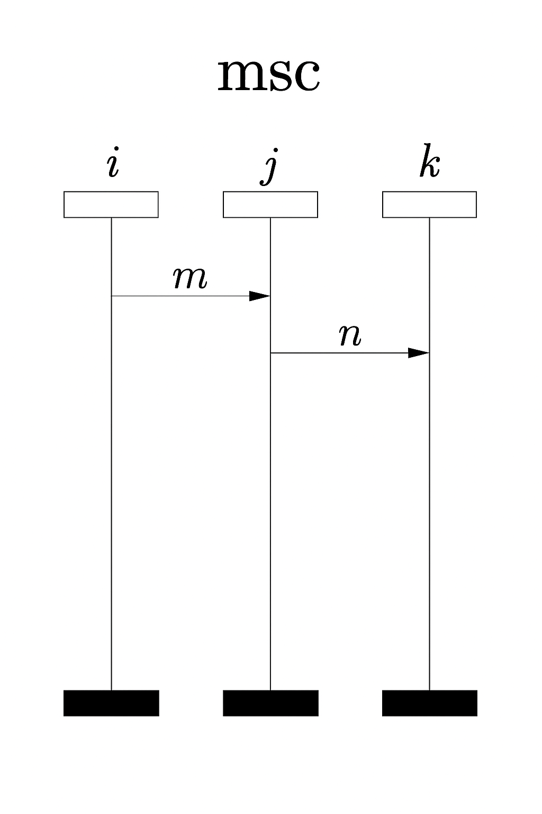

Annotations / GPT-5.4-Thinking Deep / Example 4.docx
Question: Consider the following two message sequence charts labelled "first" and "second"; compose them horizontally and draw the resulting composed message sequence chart.

Answer:

Assuming horizontal composition of MSCs means juxtaposition/parallel composition of the two charts, the composed MSC contains all four instances:
i, j from first
k, l from second
message m : i → j
message n : k → l
There is no extra message or ordering constraint between the two charts.
Plain Text
msc first || second
i j k l
+-----+ +-----+ +-----+ +-----+
| | | |
|---- m ------>| |---- n ------>|
| | | |
| | | |
===== ===== ===== =====
Show more lines
So the composed chart is simply the two MSCs placed side by side in one frame, with m and n independent of each other.
Task type: Composition
Judgment: Incorrect
Question: What is the order between sending m and receiving n in the composed diagram.
Answer:
In the horizontally composed MSC, there is no forced order between:
send(m)
and
recv(n)
That is, they are unordered / concurrent in the composed partial order.
Reason
m belongs to the first MSC:
$$i\overset{\phantom{m}}{\rightarrow}j $$
while n belongs to the second MSC:
$$k\overset{\phantom{n}}{\rightarrow}l $$
Horizontal composition places the two MSCs side by side and preserves the internal causal orders:
send(m) ≺ recv(m)
send(n) ≺ recv(n)
But it does not introduce causal order between events from different components.
So there is no relation such as:
send(m) ≺ recv(n)
or
recv(n) ≺ send(m)
Conclusion
send(m) ∥ recv(n)
So sending m and receiving n are concurrent / unordered in the composed diagram.
Task type: Composition
Judgment: Correct
Question:
Please consider the original two MSCs labelled "first" and "second", given here again. Please compose them vertically (by putting "first" on top and "second" at the bottom). Please draw the resulting composed diagram
Answer:

For vertical composition (also called sequential composition) with msc first on top of msc second, the events of first must all occur before the events of second.
Since the instance sets are disjoint, the composed MSC simply stacks the two charts in time.
Resulting composed MSC (ASCII sketch)
msc first ; second
i j k l
+-----+ +-----+ +-----+ +-----+
| | |
|---- m ------>| |
| | |
| | |
| | |
| | | |
| | |---- n ------>|
| | | |
===== ===== ===== =====
Key properties of the vertical composition
All events of msc first precede all events of msc second.
Ordering relations:
send(m) ≺ recv(m)
send(n) ≺ recv(n)
Additionally:
send(m), recv(m) ≺ send(n), recv(n)
Intuition
Vertical composition enforces global time order between the two MSCs, unlike horizontal composition which leaves them concurrent.
If you want, I can also formalize this as a partial order of events or compare it directly with the horizontal composition case.
Task type: Composition
Judgment: Incorrect
Question:
What is the order between sending m and receiving n in the vertically composed diagram.
Answer:
In the vertically composed diagram, with first placed above second, the order is:
$$send(m)\text{\:\,} \prec \text{\:\,}recv(n) $$
So sending m occurs before receiving n.
Why?
Vertical composition imposes a sequential order between the two MSCs:
first; second
That means every event in first happens before every event in second.
Since:
send(m) is an event in msc first
recv(n) is an event in msc second
we get:
send(m) ≺ recv(n)
Also, by transitivity
The full relevant ordering is:
send(m) ≺ recv(m) ≺ send(n) ≺ recv(n)
So the answer is:
Sending m strictly precedes receiving n in the vertically composed MSC.
Task type: Composition
Judgment: Incorrect